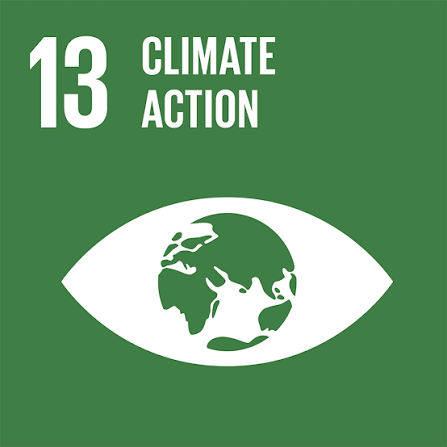
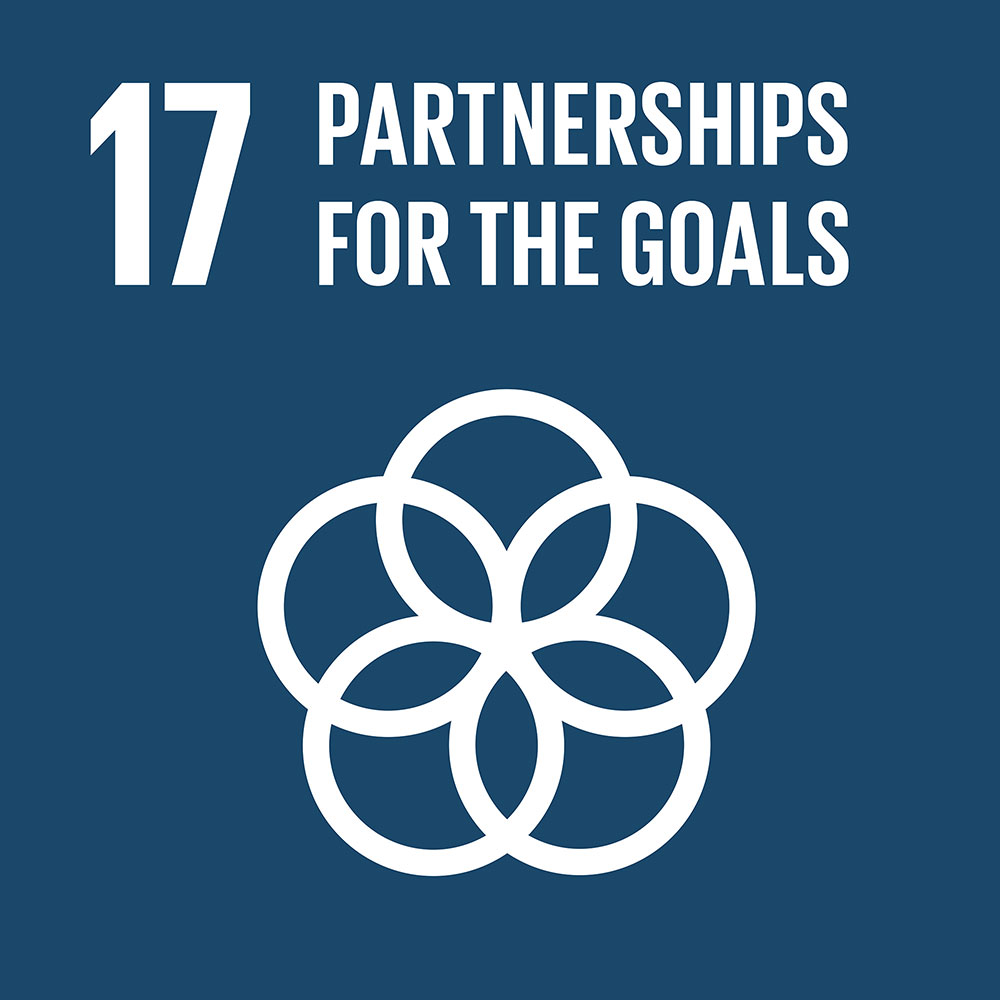
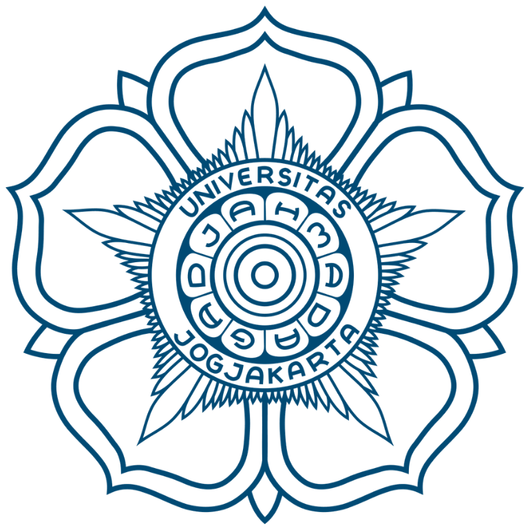
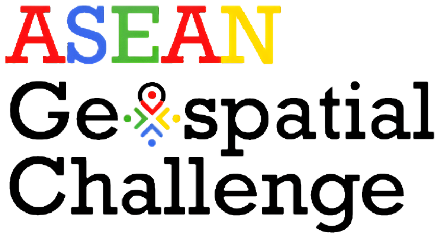
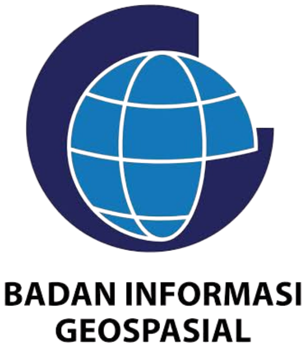

Fayyadh Faliha Faruq

Mochammad Rafli Nur Setyawan

Naura Aliya Titania

Safrina Auliya Maruni
Pulau Kalimantan merupakan salah satu benteng pertahanan terakhir bagi orangutan Kalimantan (Pongo pygmaeus), spesies payung yang kini berada dalam status terancam kritis (Critically Endangered). Keberlangsungan hidup populasi ini menghadapi tekanan berat akibat hilangnya kanopi hutan primer dan fragmentasi habitat alami.
Pada periode 1 Mei – 30 Oktober 2019, anomali iklim El Niño memicu kebakaran hutan dan lahan gambut berskala besar di Kalimantan. Bencana ini melepaskan emisi kabut asap tebal lintas batas (transboundary haze) yang mencemari atmosfer regional, merusak vegetasi pakan dan sarang, serta mengancam kesehatan pernapasan satwa liar maupun masyarakat lokal.
Menghadapi krisis tersebut, MAWAS dikembangkan untuk memodelkan dan memprioritaskan habitat aman sementara (temporary safe refugia). Memanfaatkan komputasi awan Google Earth Engine (GEE), WebGIS interaktif, dan analisis autokorelasi spasial Getis-Ord Gi*, sistem ini mengintegrasikan kesesuaian biofisik habitat, kerentanan ekologis gambut, dan dinamika sebaran polusi udara secara objektif.

SDG 13: Penanganan Perubahan Iklim
Memetakan sebaran kabut asap dan paparannya terhadap habitat selama kebakaran Mei-Oktober 2019.

SDG 15: Ekosistem Daratan
Memprioritaskan habitat aman sementara bagi orangutan Kalimantan menggunakan pemodelan kesesuaian habitat.

SDG 17: Kemitraan untuk Mencapai Tujuan
Dibangun bersama dan menggabungkan data satelit dari berbagai sumber.



MAWAS merupakan karya pemodelan geospasial yang diikutsertakan dalam ajang ASEAN Geospatial Challenge (AGC), kompetisi inovasi geospasial regional Asia Tenggara yang mendorong penerapan teknologi geospasial untuk pencapaian Sustainable Development Goals.